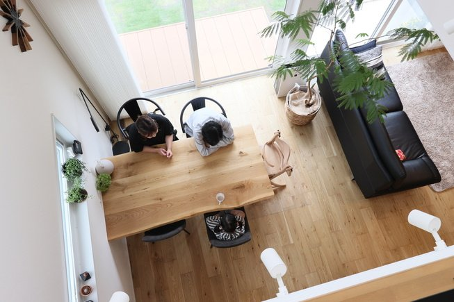
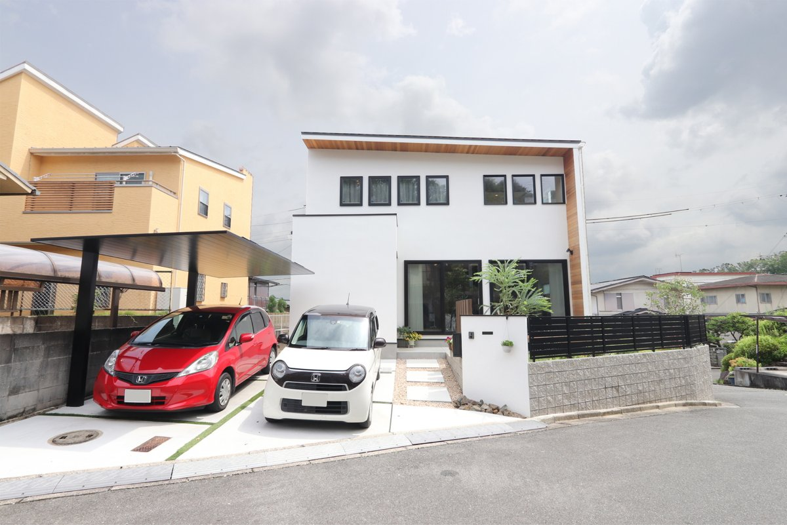

旧サイトに掲載していた取材記事より。
新型コロナウイルスが影響し、仕事が休業になり、家にいる時間が増えたことが家づくりを始めるきっかけとなりました。
まずは土地から探さないとと思い、インターネットなどで土地を探していろんなところを見に行きました。
住宅展示場や様々な会社にも行きましたが、年齢が若いということもあったのか、真剣に話を聞いてくれなかったりすることもあり、すごく疲れたのを覚えています。
様々なハウスメーカー・工務店と伺っている中でハウスメーカーは決まった形の間取りなどが多く、せっかく建てるならこだわりをもった家を建てたいという思いから、工務店で家づくりをしたいと考えていました。
たまたまシバサンホームのホームページを見て、相談会に参加しました。
その際、担当アドバイザーがとても親身になってくれてよかったです。
自分たちで調べても情報が多すぎて分からなかったので、私たちの状況に応じてアドバイスしてくれたりしました。
土地は自分たちで探し、購入していたのですが、最初からお願いしておけばよかったと思っています。

家のこだわりはキッチン、トイレ、吹き抜けと沢山あります。
吹き抜けは知り合いなどから反対されたけど、暮らしてみたら大正解でした。
外壁はサイディングやガルバリウムなどある中で、塗り壁を採用したいという思いがあり、色々な会社を回る中で、デメリットなども聞いていましたが、そのデメリットを解消できるよう提案してもらいました。
家の内装カラーも何色も選ばずに、木の色・グレー・ホワイトでまとめたのが良かったと思います。
コーディネーターさんに感謝ですね。
そうですね。
とことん情報収集することや信頼できる担当さんを見つける、めぐり合うまで探すことが大切だと思います。
どうしても、家づくりでやりたいことや譲れないものを明確にし、担当さんにどうしたら思い描いた家づくりができるかを話し合いました。
これからは友人を呼んでBBQしたり、子供とプールで遊んだりも出来るので、改めて家を建ててよかったなと思っています。